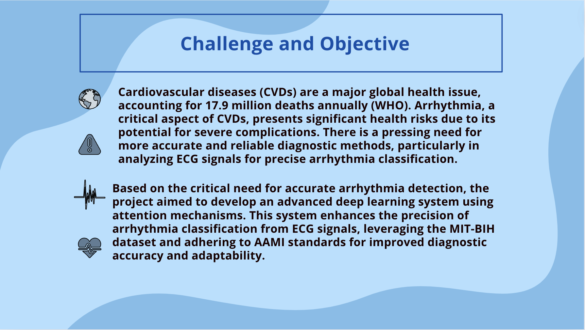
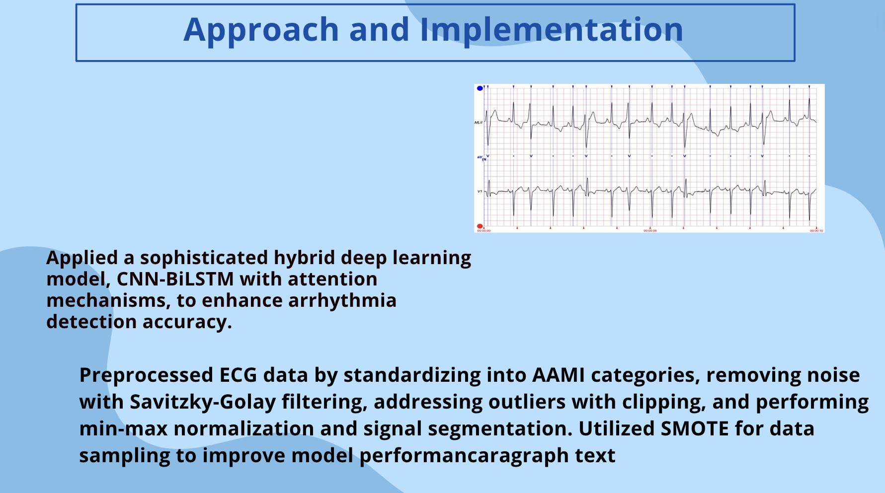
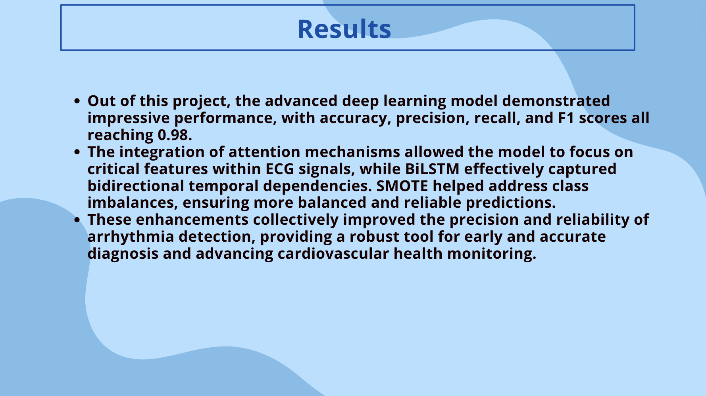

Advanced Arrhythmia Detection



Description
-
Anitha Balachandran
-
Dec, 2023
The project focuses on leveraging advanced deep learning techniques to enhance the precision of arrhythmia detection and classification using ECG signals.